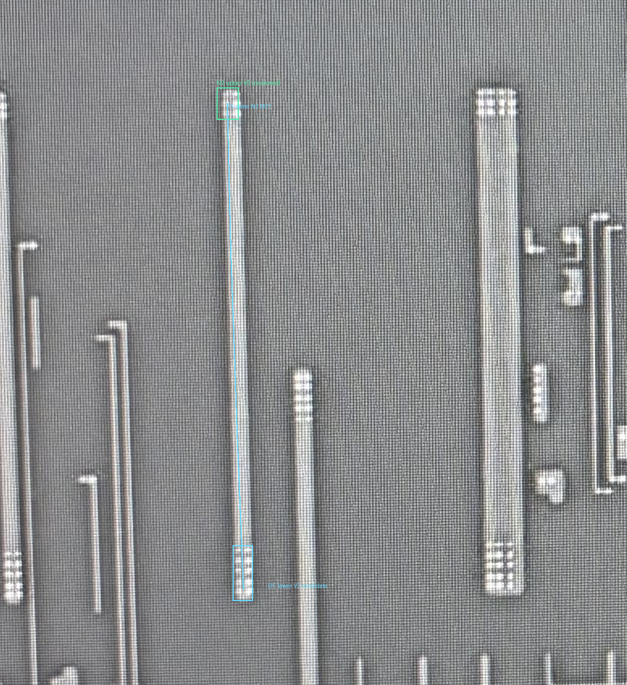
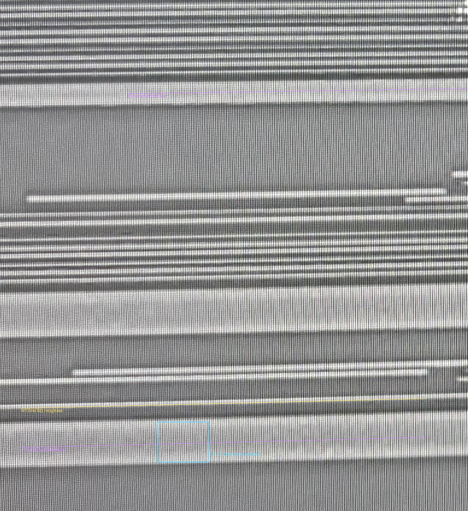
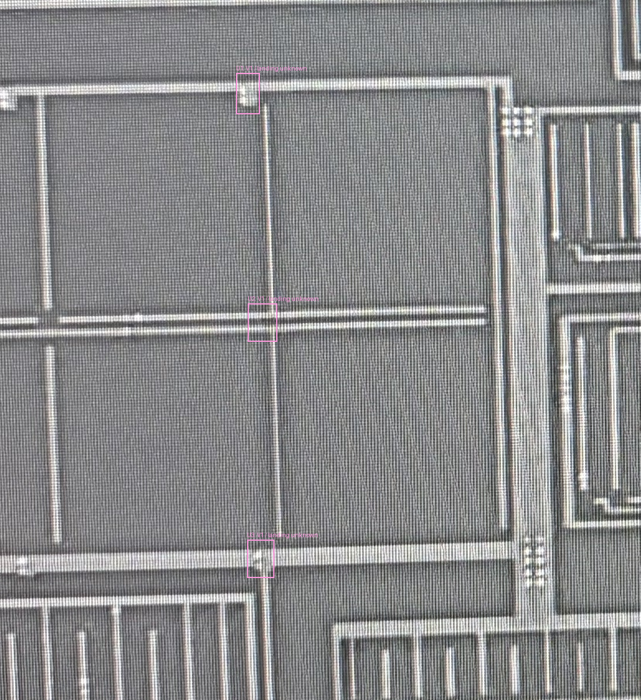
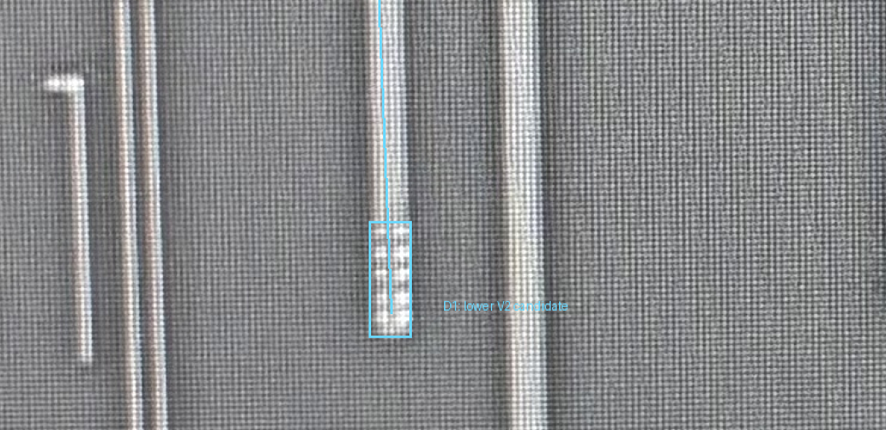
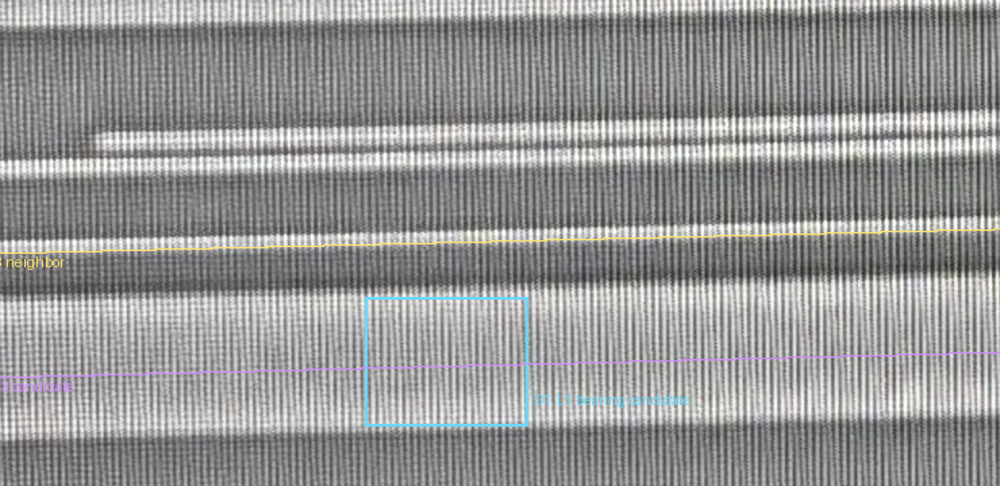
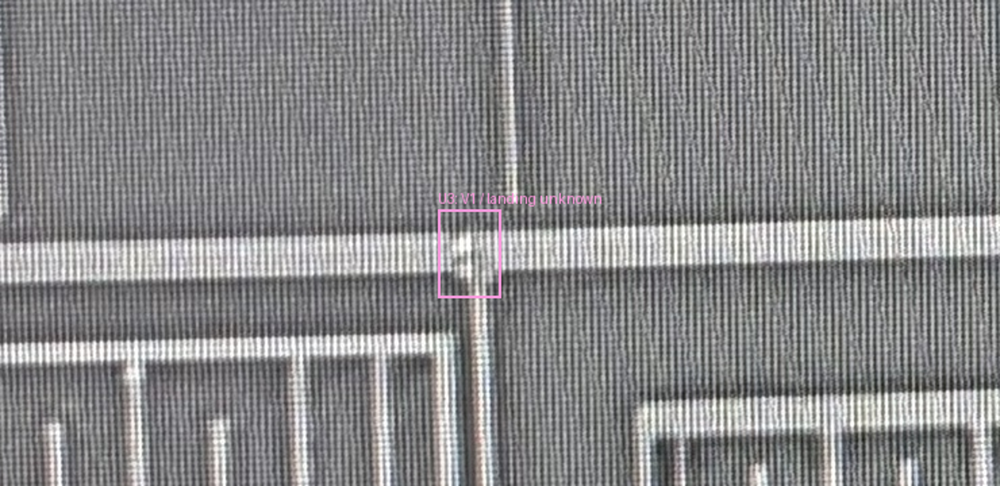

上端 N2 经 V2 接 B1 已批准，保持不动。沿同一根窄 M2 向下观察，可见中段连续、下端收口；下端另有规则孔组 D1，初判为 V2，接到紫色 L1 宽横向 M3。
黄色 H1 是其上方细横线。多行孔组需要足够宽的金属包围，L1比细H1更符合结构；这只是候选依据，不是已经通过物理DRC。右侧另一根宽M2没有并入N2。
M1的U1／U2／U3仅是待查窗口，不要求你据此强行判定连接；没有足够V1与位置证据时继续保留未知。
各层保留原生照片坐标，不叠图、不套用旧9对Via配准点。M3蓝框只定位承载区域，不是观察到的V2孔坐标。中段未见清楚新增孔组不等于证实无孔；本轮没有全网完成或所有接口已枚举结论。






| 位置 | 原生窗口 | 边界 |
|---|---|---|
| U1 | [1505, 1875, 1545, 1945] | Upper M1 horizontal junction is a locator only; no reliable V1-to-N2 assignment established |
| U2 | [1525, 2270, 1575, 2335] | Middle horizontal/vertical context: crossing or proximity cannot establish V1 or connection to N2 |
| U3 | [1524, 2675, 1570, 2740] | Lower broad M1 junction and downward edge observed; V1 identity and N2 landing are not established |
这些只是邻近结构定位窗，没有合格M1↔M2映射，不能自动当成目标N2上的接口，也没有宣称它们确实有或没有V1。